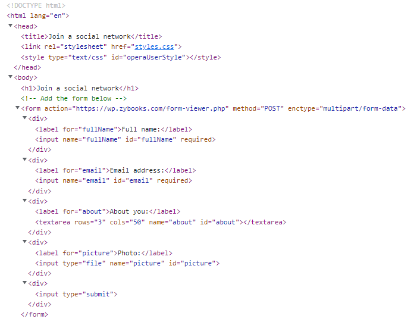
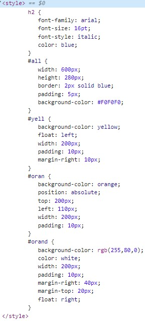
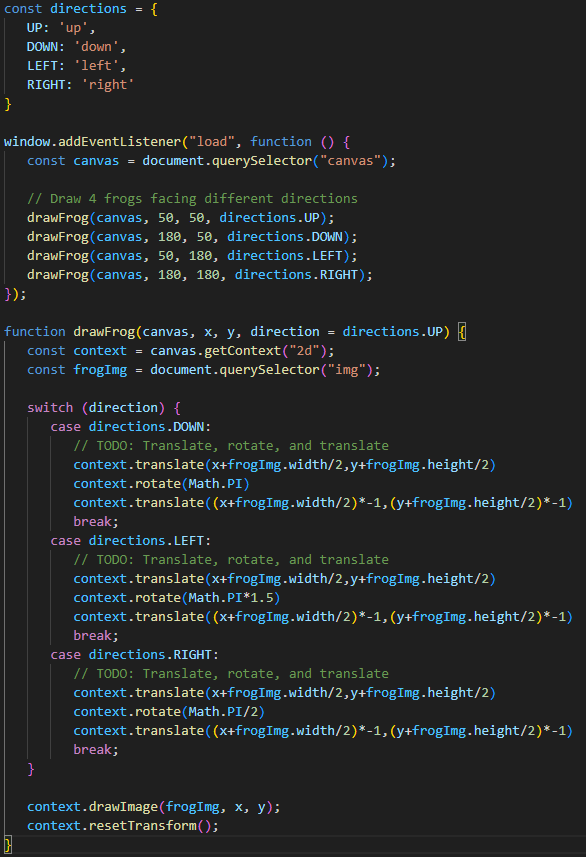
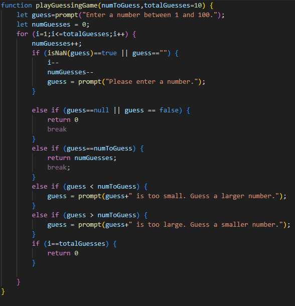

Ruiz-Serrano
The following image shows the html I created to put together a form:

This screenshot shows CSS code used to give colored boxes to the background of various paragraphs:

The next image shows java used on a website to draw a picture of a frog 4 times, with each new drawing of the image being rotated to a different direction:

This screenshot shows java code that creates a prompt in the browser that allows users to guess a number and receive information over whether the real number is higher or lower than their guess:
